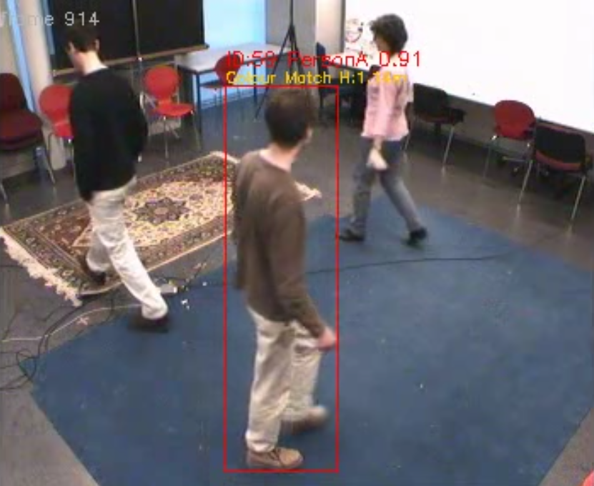
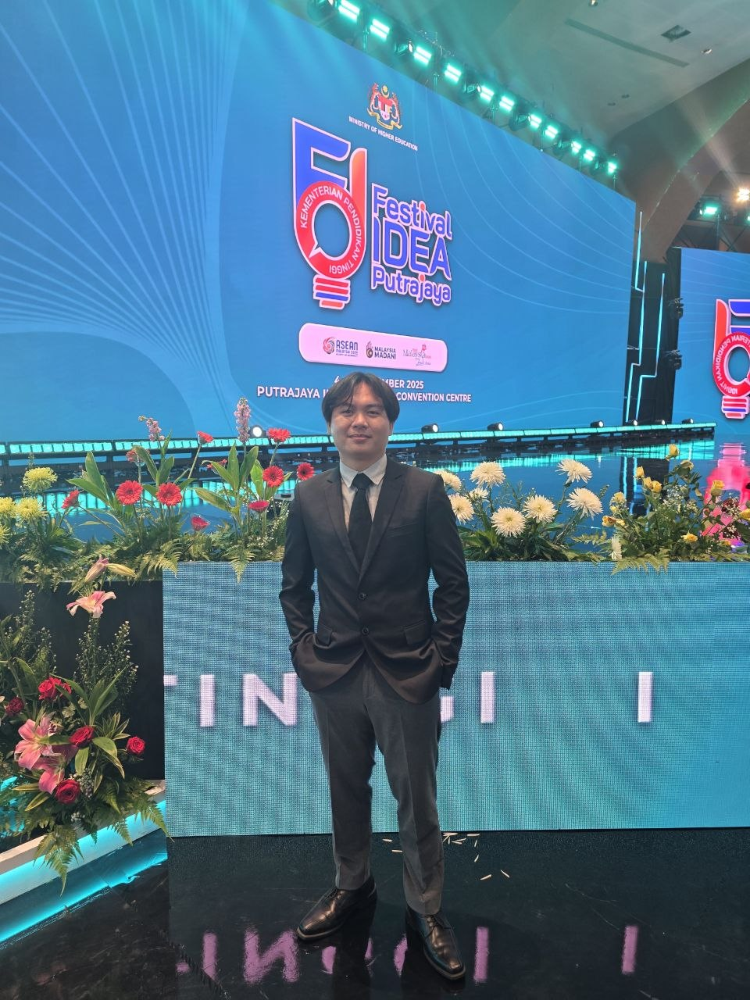
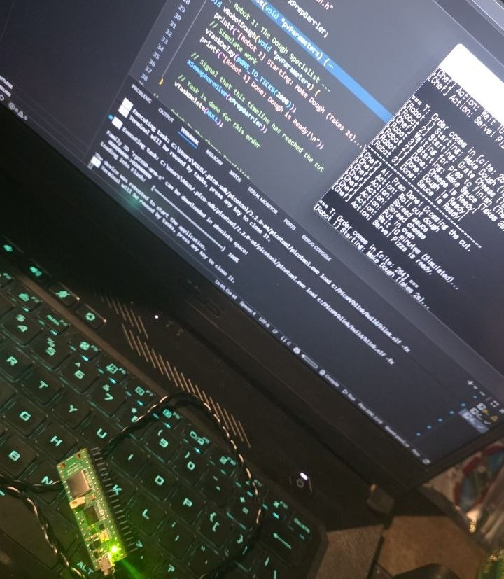
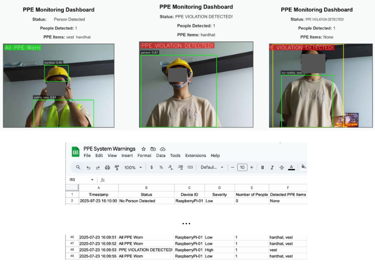
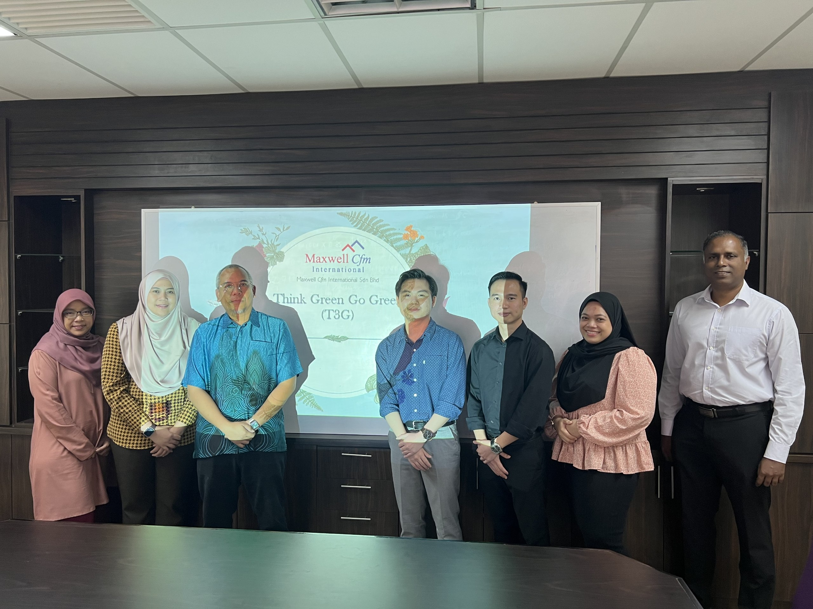
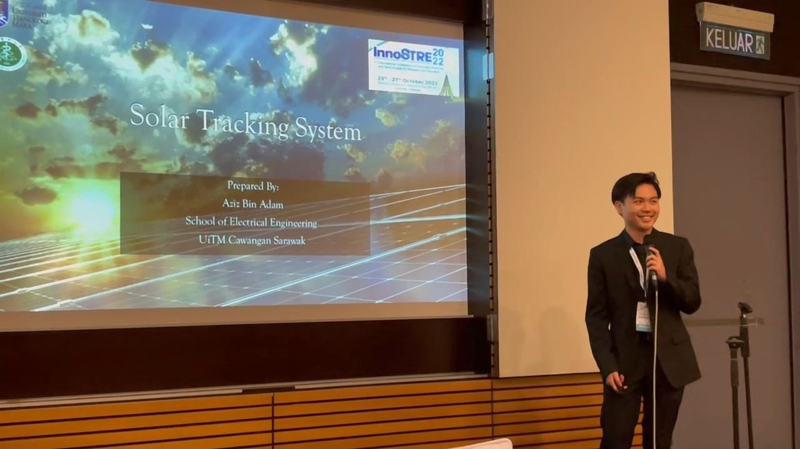

Final Year Project · 2025–2026
OneTracer
A software-based proof of concept for missing-person detection and identification using computer vision and AI, evaluated using recorded indoor security footage.
View Project →Electronics Engineering Graduate
Passionate about building practical engineering solutions that integrate embedded systems, computer vision, IoT, and artificial intelligence. I enjoy transforming ideas into reliable, real-world applications through thoughtful hardware and software design.

Get to know me
I’m an Electronics Engineering graduate from Universiti Teknologi MARA (UiTM), with a background in Computer Engineering and a strong interest in building intelligent embedded systems.
My interests sit at the intersection of hardware and software, particularly embedded systems, computer vision, IoT, and artificial intelligence. I enjoy turning ideas into practical engineering solutions by combining different technologies into a working system.
Through my studies and internship experience, I have worked on projects involving system development, hardware-software integration, computer vision, and collaborative engineering activities. I’m now looking to grow as an engineer while continuing to build practical and meaningful technology.
Selected work
A selection of academic and collaborative projects exploring embedded systems, computer vision, intelligent systems, and practical engineering solutions.

Final Year Project · 2025–2026
A software-based proof of concept for missing-person detection and identification using computer vision and AI, evaluated using recorded indoor security footage.
View Project →
Embedded Systems · RTOS · 2025–2026
A FreeRTOS firmware project developed on the RP2350, exploring concurrent task execution, semaphore-based synchronization, and embedded system development.
View Project →
Collaborative Project · 2025
An IoT-based personal protective equipment monitoring system integrating Raspberry Pi, computer vision, a monitoring dashboard, and cloud-based data logging to detect PPE compliance in real time.
View Project →
Collaborative Project · 2022
A sustainability campaign proposal designed and presented to a university's Green Centre, targeting plastic waste at a campus cafeteria.
View Project →
Diploma Final Year Project · 2021 - 2022
A time-scheduled solar tracking system developed as a Diploma Final Year Project, combining automated panel positioning, sensor feedback, and Wi-Fi-based monitoring. The project was presented as a proof of concept at InnoSTRE 2022 during its development.
View Project →Professional Experience
Practical experience across biomedical engineering maintenance, facilities management, IoT systems, and project leadership.
Aug – Sep 2025
Biomedix Solutions Sdn Bhd
Performed planned preventive and corrective maintenance on medical equipment, including inspection, functional testing, electrical safety testing, calibration, fault diagnosis, and documentation.
Diagnosed two separate faults on a critical plasma warmer and verified the repairs through calibration and functional testing.
Mar – Jul 2023
Maxwell Cfm International Sdn Bhd
Supported facilities management activities involving sensor-based monitoring, equipment data analysis, technical outreach, and internal project development.
Led a three-person team in developing and presenting a sustainability project proposal, responding to stakeholder feedback and revising the proposed implementation timeline during the meeting.
Technical capabilities
A practical engineering toolkit developed through academic projects, hands-on system development, networking studies, and professional engineering experience.
Hardware and embedded-system development, with experience integrating electronics, sensors, and software into practical engineering systems.
Computer-vision and machine-learning techniques applied to detection, tracking, identification, and intelligent system development.
Programming and software development used to support embedded systems, computer-vision applications, and engineering projects.
Integration of sensors, connected systems, and software for monitoring, data collection, and practical engineering applications.
Foundational networking knowledge covering IP addressing, connectivity, Ethernet, wireless networking, and network troubleshooting.
Hands-on engineering practices developed through biomedical equipment maintenance, technical projects, and collaborative engineering work.
Recognition & Credentials
Academic recognition, project achievements, and professional certifications developed throughout my engineering education and continued professional development.
Awards & Recognition
Academic Recognition
Universiti Teknologi MARA (UiTM)
Awarded for academic excellence in the Bachelor of Electronics Engineering with Honours (Computer Engineering) programme.
Competition / Innovation
International Research and Information Science Expo (IRISE) 2025
Awarded a Silver Medal in the Tertiary, Science and Technology category for the Health Smartwatch project.
Conference Presentation
2nd International Conference on Innovative Sciences and Technologies for Research and Education
Presented the Solar Tracking System project and received a Certificate of Appreciation in recognition of the contribution as a presenter.
Licenses & Certifications
Cisco
Student-level credentialTP-Link Systems Inc.
Valid through 2029Amazon Web Services (AWS)
CompletedTelekom Malaysia
Valid through 2028Google · Coursera
Get in touch
Whether you're interested in discussing an engineering opportunity, a project, or simply connecting professionally, I'd be happy to hear from you.